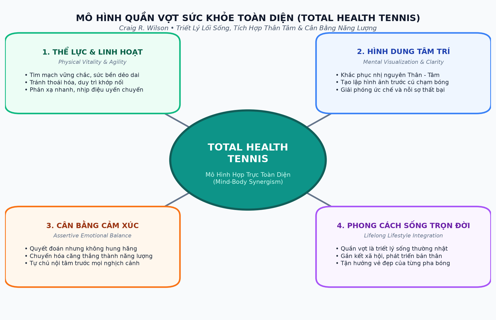
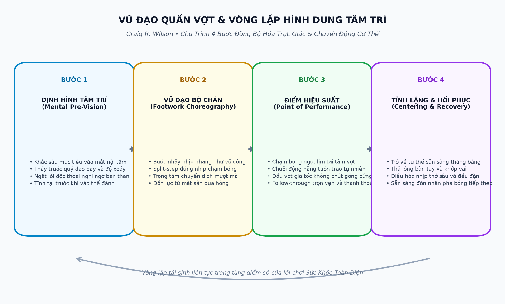

PHẦN 1: TRIẾT LÝ SỨC KHỎE TOÀN DIỆN & ĐỘNG LỰC NỘI TẠI
— Craig R. Wilson (Total Health Tennis)
Lời Người Dịch: Quần Vợt Như Một Triết Lý Sống Toàn Diện
Trong thế giới thể thao hiện đại, người ta thường nhìn nhận quần vợt dưới lăng kính của những cuộc tranh tài nảy lửa, những cú giao bóng sấm sét hay bảng xếp hạng danh vọng. Thế nhưng, đằng sau những tiếng hò reo trên khán đài, có một câu hỏi sâu xa hơn mà mỗi người cầm vợt sớm muộn gì cũng phải đối mặt: Chúng ta thực sự tìm kiếm điều gì sau hàng ngàn giờ đổ mồ hôi trên sân banh nỉ?
Craig R. Wilson — một huấn luyện viên, nhà giáo dục và học giả thể thao tiên phong — đã cống hiến trọn vẹn cuốn sách Total Health Tennis: A Lifestyle Approach để trả lời câu hỏi hiện sinh đó. Tác phẩm này vượt lên trên những giáo trình kỹ thuật khô khan thông thường, mở ra một chân trời mới: biến quần vợt thành một thực hành rèn luyện lối sống (lifestyle practice), kết hợp giữa y học vận động, tâm lý học hình dung và triết lý sống hợp trực (synergism).
Đối với người chơi phong trào, thanh thiếu niên cũng như các bậc cao niên, cuốn sách mang đến một bức thông điệp giải phóng: bạn không cần phải trở thành một vận động viên vô địch thế giới mới tận hưởng được sự kỳ diệu của quần vợt. Khi bạn tiếp cận môn chơi bằng tư duy Sức Khỏe Toàn Diện (Total Health), mỗi buổi ra sân sẽ trở thành một liều thuốc trẻ hóa tế bào, một buổi thiền động giải tỏa căng thẳng và một hành trình khám phá chính mình.
Chương 1: Sức Khỏe Toàn Diện Qua Môn Quần Vợt (Total Health Through Tennis)
Khái niệm Sức Khỏe Toàn Diện (Total Health) mà Craig R. Wilson khởi xướng không đơn thuần là sự vắng bóng của bệnh tật cơ thể. Đó là một trạng thái sung mãn, tích cực và cân bằng giữa năng lượng thể chất, sự sáng suốt của trí tuệ và sự bình an trong tâm hồn.
Quần vợt sở hữu một sức hút phổ quát độc nhất vô nhị bởi vì nó đòi hỏi sự tham gia đồng thời của toàn bộ hệ thống sinh học con người:
- Hệ tim mạch và hô hấp: Nhịp điệu vận động ngắt quãng cường độ cao (HIIT tự nhiên) giúp rèn luyện cơ tim, tăng dung tích phổi và thanh lọc huyết quản.
- Hệ thần kinh và phản xạ vận động: Tốc độ bay của quả bóng buộc các synapse thần kinh phải xử lý thông tin và ra quyết định trong vài phần trăm giây, giữ cho não bộ luôn nhạy bén và ngăn ngừa thoái hóa thần kinh.
- Hệ cơ xương khớp và sự linh hoạt: Các động tác vặn xoắn thân trên, chùng chân và duỗi người kích hoạt chuỗi cơ cốt lõi (core muscles) và duy trì dịch bôi trơn tại các khớp nối.

Một trong những đóng góp triết học sâu sắc nhất của tác giả là việc chỉ ra và khắc phục sự nhị nguyên tai hại giữa Thân và Tâm (The Mind-Body Dualism). Phần lớn người chơi thường để tâm trí đóng vai trò một kẻ phán xét nghiệt ngã đứng ngoài chỉ trích cơ thể: 'Tại sao tay lại cứng đờ thế?', 'Sao chân lại lười di chuyển thế?'. Sự phân liệt này tạo ra xung đột nội tâm, dẫn đến các hành vi tự triệt tiêu năng lượng (Self-Cancelling Behavior).
Trong trạng thái Sức Khỏe Toàn Diện, Thân và Tâm hợp nhất làm một. Tâm trí không ra lệnh bằng ngôn từ gắt gỏng mà dẫn dắt bằng hình ảnh và cảm giác trực giác; cơ thể không phục tùng trong sợ hãi mà phản ứng uyển chuyển trong niềm hân hoan vận động. Khoảnh khắc chạm bóng hoàn hảo chính là Điểm Hiệu Suất (The Point of Performance) — nơi bản thể hiện tại (Being) hòa quyện cùng quá trình tiến bộ không ngừng (Becoming).
Chương 2: Động Lực Nội Tại & Phân Khúc Người Chơi (The Private Motivation)
Tại sao chúng ta lại chơi quần vợt? Động cơ thầm kín thúc đẩy bạn xỏ giày ra sân lúc sáng sớm hay sau những giờ làm việc mệt mỏi là gì? Craig R. Wilson đã tiến hành khảo sát và phân loại người chơi quần vợt thành năm nhóm động lực tâm lý đặc thù:
- Nhóm Bạn Chơi (The Playmates): Những người tìm kiếm niềm vui kết nối xã hội, tiếng cười sảng khoái và tình bằng hữu. Đối với họ, quần vợt là nhịp cầu giao tiếp và sự giải tỏa lành mạnh khỏi những lo toan đời thường.
- Nhóm Thăm Dò Giới Hạn (The Boundary Probers): Những người luôn tò mò muốn biết giới hạn thể lực và kỹ năng của bản thân nằm ở đâu. Họ thích đương đầu với những cú đánh khó và sẵn sàng thử nghiệm những kỹ thuật mới.
- Nhóm Tìm Kiếm Bản Ngã (The Self-Seekers): Những người coi sân đấu là nơi khẳng định giá trị bản thân, tìm kiếm sự công nhận và nâng cao lòng tự trọng thông qua sự tiến bộ kỹ thuật.
- Nhóm Chiến Lược Gia Sinh Tồn (The Survival Strategists): Những người xem việc chơi quần vợt như một phương thức bảo vệ sức khỏe thiết yếu để chống lại sự lão hóa, bệnh tật và áp lực công việc văn phòng.
- Nhóm Định Hình Phong Cách Sống (The Lifestylists): Tầng lớp người chơi đạt tới tầm nhìn cao nhất, xem quần vợt là một phần không thể tách rời trong lối sống cân bằng, thanh lịch và trường thọ.
PHẦN 2: KHOA HỌC HÌNH DUNG TÂM TRÍ & VŨ ĐẠO CHUYỂN ĐỘNG
— Craig R. Wilson (Total Health Tennis)
Chương 3: Khoa Học Hình Dung & Kỹ Thuật Quần Vợt (Visualization Technique)
Một trong những phát hiện mang tính cách mạng nhất của tâm lý học thể thao trong thế kỷ hai mươi là mối quan hệ tỷ lệ nghịch giữa sự hình dung (visualization) và ngôn ngữ lời nói (verbal language). Khi bạn đứng trên sân và liên tục tự nhủ trong đầu: 'Đưa vợt ra sau sớm, hạ đầu vợt xuống thấp, bước chân trái lên, xoay vai ba mươi độ', bạn đang ép bán cầu não trái (vốn xử lý ngôn ngữ một cách tuần tự và chậm chạp) phải gánh vác một công việc vốn thuộc về bán cầu não phải (nơi xử lý không gian, hình ảnh và nhịp điệu với tốc độ chớp nhoáng).
Hậu quả của việc 'nói quá nhiều trong đầu' là những động tác giật cục, thiếu tự nhiên và sự căng cứng cơ bắp ngoài ý muốn. Phương pháp Sức Khỏe Toàn Diện đảo ngược hoàn toàn quy trình này thông qua ba cấp độ hình dung không gian:
- Hình dung cây vợt như một phần kéo dài của cơ thể: Cây vợt không phải là một vật thể kim loại hay graphite xa lạ cầm trên tay, mà là sự mở rộng trực tiếp của bàn tay và cẳng tay. Mặt vợt chính là lòng bàn tay của bạn.
- Hình dung quả bóng trong quỹ đạo ba chiều: Nhìn thấy rõ ràng các đường rãnh nỉ của quả bóng đang xoay tròn trong không khí, cảm nhận được độ nén của quả bóng khi tiếp xúc vào mặt lưới và hướng bật ra của nó.
- Hình dung hình học sân đấu: Cảm nhận các đường biên dọc, biên ngang và mép lưới như một mạng lưới không gian sống động bao quanh bạn, giúp bạn định vị chính xác vị trí của mình mà không cần phải nhìn xuống chân.
Chương 4: Vũ Đạo Quần Vợt (Tennis Choreography)
Craig R. Wilson so sánh việc di chuyển trên sân quần vợt với một màn trình diễn múa đương đại đỉnh cao. Một vũ công giỏi không bao giờ bước những bước nặng nề, thô kệch; họ lướt trên sàn diễn với sự nhẹ nhàng, cân bằng hoàn hảo và sự hòa hợp nhịp nhàng giữa hơi thở và động tác.

Để rèn luyện vũ đạo bộ chân trong quần vợt, tác giả giới thiệu bài tập Sân Đấu Tưởng Tượng (The Imaginary Court). Người tập đứng trong một không gian yên tĩnh, không cần bóng thật, bật một bản nhạc có tiết tấu du dương và bắt đầu thực hiện các chuỗi động tác di chuyển ngang, bước tách chân (split-step), chùng gối đón bóng và vung vợt theo nhịp điệu âm nhạc.
Khi đôi chân được giải phóng khỏi nỗi sợ đánh hỏng bóng thật, cơ thể sẽ tự động tìm thấy sự thăng bằng tối ưu và nhịp điệu sinh học mượt mà nhất. Khi bước vào trận đấu thực tế, nhịp điệu vũ đạo này sẽ tự động tái hiện, biến từng pha cứu bóng khó khăn thành một màn biểu diễn thanh lịch và không hề tốn sức.
Chương 5: Hình Dung Mục Tiêu & Điểm Số Chiến Thắng (Target Visualization)
Hình dung mục tiêu (Target Visualization) là kỹ thuật khắc sâu điểm rơi mong muốn vào tâm trí trước khi thực hiện cú đánh. Thay vì tập trung nhìn vào mép lưới hay lo sợ đối thủ đánh trả, bạn phóng chiếu một mục tiêu vô hình rực sáng tại góc sân đối phương:
- Hình dung quả giao bóng (Service Vision): Nhìn thấy trước toàn bộ vòng cung của quả bóng bay vút qua mép lưới và cắm sâu vào góc chữ T hoặc góc rộng của ô giao bóng.
- Hình dung độ xoáy (Spin Visualization): Cảm nhận bằng xúc giác trước khi vung vợt: cảm giác chém bóng lướt ngang cho quả slice serve, hay cảm giác vuốt bóng từ dưới lên qua đỉnh đầu cho quả topspin và American twist.
- Hình dung cú dứt điểm thăng hoa (Winning Put-Away): Mắt nội tâm thấy trước khoảnh khắc quả volley đệm ngắn nằm ngoài tầm với của đối thủ, hay cú đập smash sấm sét chạm sân và nảy vọt ra ngoài hàng rào trong tiếng vỗ tay tán thưởng.
PHẦN 3: KỸ THUẬT CĂN BẢN CHO NGƯỜI TRƯỞNG THÀNH
— Craig R. Wilson (Total Health Tennis)
Chương 8: Bộ Cầm Vợt & Tư Thế Sẵn Sàng (Proper Grips & Ready Position)
Tư thế sẵn sàng (Ready Position) là cội nguồn của mọi chuyển động trên sân. Nhiều người chơi trưởng thành đứng đón bóng với tư thế buông thõng hai tay hoặc gù lưng mệt mỏi, khiến họ luôn bị động khi quả bóng bay tới.
Tư thế sẵn sàng chuẩn mực theo triết lý Sức Khỏe Toàn Diện đòi hỏi một sự tỉnh thức toàn thân nhưng hoàn toàn không gồng cứng:
- Trọng tâm chùng xuống: Hai chân mở rộng bằng vai, đầu gối hơi khuỵu, dồn trọng lượng đều lên phần ức bàn chân để sẵn sàng bật nhảy theo bất kỳ hướng nào.
- Vợt hướng về phía trước: Đầu vợt nâng cao ngang tầm ngực, tay không thuận đỡ nhẹ vào cổ vợt để chia sẻ sức nặng và hỗ trợ việc xoay chuyển cán vợt tức thì.
- Kiểu cầm vợt trung tính (Continental / Eastern): Giúp bạn nhanh chóng chuyển đổi linh hoạt sang bên thuận tay (forehand) hoặc trái tay (backhand) mà không làm trễ nhịp di chuyển.
Chương 9: Cú Volley & Nghệ Thuật Chiếm Lĩnh Mặt Lưới (The Volley)
Khi tiến lên lưới, thời gian phản xạ bị thu hẹp lại chỉ còn một phần ba so với khi đứng ở vạch cuối sân. Sai lầm phổ biến nhất của người chơi phong trào là cố vung vợt ra sau thật xa như khi đánh bóng nảy đất. Động tác vung vợt này chắc chắn sẽ dẫn đến việc đánh bóng muộn và hỏng ăn.
Bí quyết thực hiện cú volley thanh thoát và an toàn của Craig R. Wilson bao gồm ba nguyên tắc cốt lõi:
- Không vung vợt ra sau (No Backswing): Hãy tưởng tượng mặt vợt của bạn là một chiếc khiên chắn. Bạn chỉ cần giơ khiên ra chặn đúng đường bay của quả bóng trước mặt cơ thể.
- Cú đẩy dứt khoát (Punch, Don't Swing): Dùng chuyển động đẩy nhẹ từ vai và bước chân tới để tạo lực, giữ cho cổ tay luôn khóa chặt và đầu vợt cao hơn cổ tay tại thời điểm tiếp xúc.
- Bước chân chuyển trọng tâm: Bước chân đối diện chéo về phía trước (chân trái bước lên đối với cú volley thuận tay của người thuận tay phải) để truyền toàn bộ trọng lượng cơ thể vào quả bóng.
Chương 10: Cú Đánh Nảy Forehand & Backhand (The Groundstrokes)
Trong giảng dạy quần vợt truyền thống, người ta thường có xu hướng xem cú thuận tay và trái tay là hai thế giới tách biệt hoàn toàn. Thậm chí có ngụy biện cho rằng 'mỗi người có một kiểu đánh riêng biệt' để biện hộ cho những tư thế sai lệch gây tổn hại khớp xương.
Craig R. Wilson chỉ ra rằng: Cú Backhand thực chất chính là hình ảnh phản chiếu qua gương (mirror image) của cú Forehand. Khi bạn hiểu được tính đối xứng sinh học này, việc hoàn thiện cú trái tay sẽ trở nên vô cùng tự nhiên:
- Đường xoay hông đối xứng: Cú forehand xoay hông từ phải sang trái, trong khi cú backhand xoay hông từ trái sang phải. Việc tập luyện cả hai cú đánh đều đặn giúp phát triển đồng đều các nhóm cơ lưng, cơ bụng và giữ cho cột sống luôn thẳng hàng.
- Điểm tiếp xúc bóng phía trước: Dù đánh thuận tay hay trái tay, điểm chạm bóng lý tưởng luôn nằm ở phía trước hông trước khoảng hai mươi đến ba mươi phân.
- Follow-through trọn vẹn: Kết thúc cú vung vợt cao qua vai đối diện, giúp giảm tải chấn động lên khớp khuỷu tay và tạo độ xoáy cuộn bóng an toàn vào sân.
Chương 11: Cú Đập Smash Trên Đầu (The Overhead Smash)
Nhiều người chơi cảm thấy hoảng sợ khi nhìn thấy quả bóng lốp bổng bay vút lên trời xanh. Họ lúng túng lùi bước, mất thăng bằng và thường đập bóng rúc lưới hoặc văng ra ngoài hàng rào.
PHẦN 4: BẬC THẦY GIAO BÓNG, TRẢ GIAO & NGHỆ THUẬT TINH TẾ
— Craig R. Wilson (Total Health Tennis)
Chương 12: Động Tác Giao Bóng - Chiếc Khay Bạc Sang Trọng (A Silver Platter Deluxe)
Để giúp người chơi thoát khỏi sự gượng gạo khi giao bóng, Craig R. Wilson đưa ra một hình ảnh ẩn dụ tuyệt đẹp mang tên 'Chiếc Khay Bạc Sang Trọng' (A Silver Platter Deluxe).
Khi bạn bắt đầu vung vợt ra sau, hãy tưởng tượng bàn tay cầm vợt và mặt vợt của bạn đang nâng đỡ một chiếc khay bạc quý giá trên đó có những ly rượu pha lê. Động tác đưa vợt lên vị trí gãi lưng (scratching the back) phải diễn ra mềm mại, giữ cho mặt vợt hơi nghiêng mở như thể bạn không muốn làm đổ bất kỳ giọt rượu nào trên chiếc khay đó.
Hình ảnh trực quan này giúp thả lỏng hoàn toàn khớp vai, mở rộng lồng ngực và cho phép đầu vợt rơi tự do xuống phía sau lưng để tích lũy thế năng tối đa trước khi vút lên chạm bóng.
Chương 13: Chuyển Trọng Tâm & Nhịp Điệu Giao Bóng (Weight Transfer & Rhythm)
Cú giao bóng chuẩn xác có nhịp điệu mượt mà đến mức tác giả khẳng định: 'Bạn hoàn toàn có thể giao bóng theo giai điệu của một bản nhạc waltz du dương'.
Quy trình chuyển dịch trọng lượng cơ thể diễn ra tuần tự theo ba giai đoạn hoàn hảo:
- Giai đoạn lùi trọng tâm: Dồn trọng lượng về gót chân sau trong khi hai tay cùng bắt đầu hạ xuống nhịp nhàng.
- Giai đoạn tích lũy động năng: Chuyển trọng tâm lên chân trước, khuỵu gối sâu và tung bóng lên không trung theo một đường thẳng đứng ổn định phía trước trán khoảng ba mươi phân.
- Giai đoạn bùng nổ lên cao: Đạp mạnh hai chân đẩy cơ thể bay vút lên đón bóng ở tầm cao tối đa, gập thân trên về phía trước và kết thúc bằng việc tiếp đất êm ái bằng chân trước bên trong vạch cuối sân.
Chương 14: Khoa Học Xoáy Bóng Khi Giao Bóng (Service Spins)
Sự phong phú của quả giao bóng nằm ở khả năng tạo ra các quỹ đạo xoáy biến ảo, khiến đối thủ không thể phán đoán chính xác điểm nảy của bóng:
- Cú Giao Bóng Xoáy Chém (The Slice Serve): Mặt vợt chém lướt từ trái sang phải quanh mép ngoài của quả bóng, khiến bóng bay lượn vòng ra ngoài biên và nảy là là mặt sân kéo đối thủ ra khỏi sân đấu.
- Cú Giao Bóng Xoáy Cầu Vồng (The Topspin Serve): Vợt vuốt mạnh từ dưới lên trên qua đỉnh quả bóng, tạo lực ép khí động học giúp bóng bay vọt qua lưới an toàn và nảy bổng vượt quá tầm vai của đối thủ.
- Cú Giao Bóng Xoắn Đổi Hướng (The American Twist): Sự kết hợp tinh tế giữa độ xoáy topspin và sidespin, khiến quả bóng sau khi chạm đất sẽ bất ngờ nảy ngược hướng di chuyển tự nhiên, làm đối thủ hoàn toàn lúng túng.
Chương 15: Trả Giao Bóng - Cú Búng Cổ Tay Quyết Đoán (Return of Serve)
Khi đứng đón quả giao bóng có tốc độ cao, bạn không có đủ thời gian để thực hiện một động tác vung vợt đầy đủ. Craig R. Wilson chỉ ra rằng bí quyết trả giao bóng thành công nằm ở 'Cú búng cổ tay và chuyển hướng bóng' (A Snap of the Wrist).
Hãy giữ động tác đưa vợt cực kỳ ngắn gọn, bước chân tới chặn quả bóng ngay khi nó vừa nảy lên từ mặt đất và sử dụng chính tốc độ của quả giao bóng đối phương để phản đòn sâu vào góc sân trống.
Chương 16 & 17: Nghệ Thuật Lốp Bóng & Đòn Bỏ Nhỏ Tinh Tế (Lob & Drop Shot)
Một bộ kỹ năng hoàn chỉnh không thể thiếu hai vũ khí mang tính nghệ thuật và cảm giác bóng tinh tế nhất:
- Cú Lốp Bóng (The Art of Lobbing): Có hai dạng lốp bóng cơ bản: lốp phòng thủ (đưa bóng bổng lên trời cao để có thời gian phục hồi vị trí trung tâm) và lốp tấn công (tung ra bất ngờ khi đối thủ áp sát lưới với độ xoáy cuộn cắm sâu sát vạch cuối sân). Một cú lốp bóng hoàn hảo sẽ bẻ gãy hoàn toàn sự tự tin của đối thủ đang đứng lưới.
- Cú Bỏ Nhỏ Êm Ái & Hiểm Hóc (The Drop Shot): Động tác giả vờ như vung vợt đánh mạnh từ cuối sân nhưng vào khoảnh khắc chạm bóng, mặt vợt khẽ mở ra và trượt nhẹ dưới đáy quả bóng để hãm toàn bộ xung lực. Quả bóng bay qua mép lưới vài phân rồi rơi êm ái xuống mặt đất, buộc đối thủ phải chạy thục mạng trong sự bất lực.